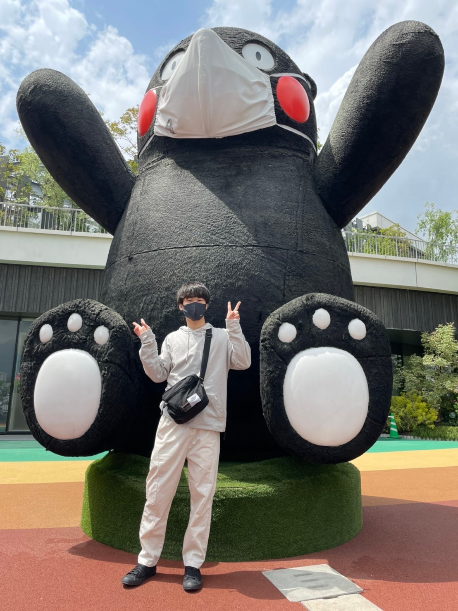
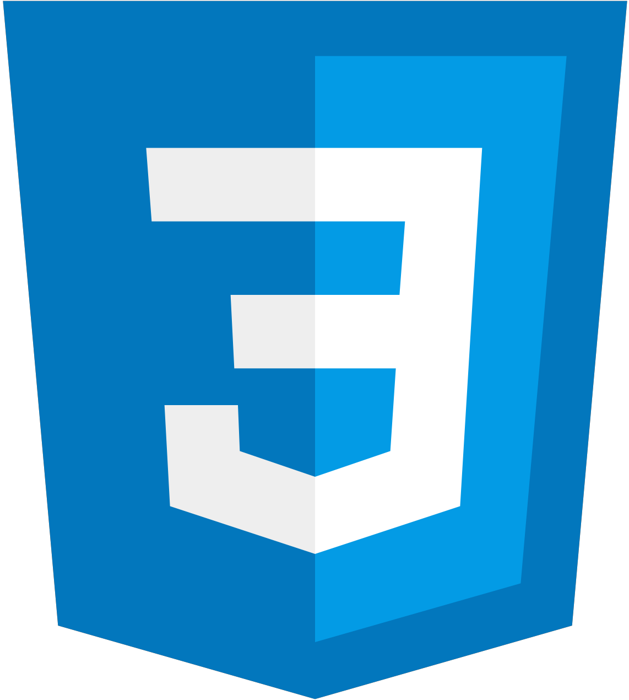
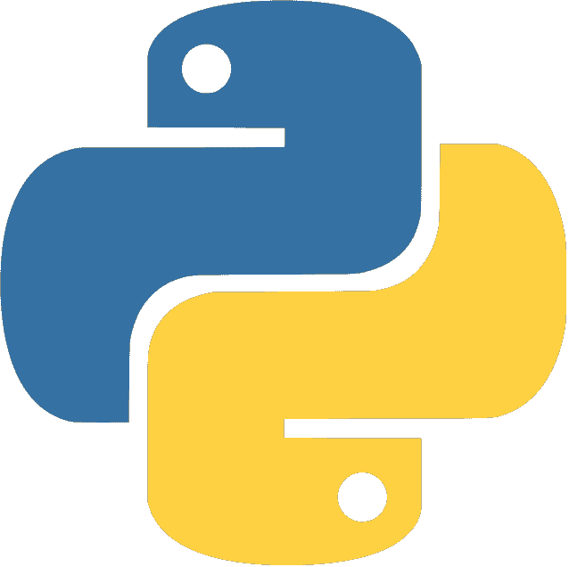

About

-
趣味：ポーカー、麻雀、ゲーム
特技：バレー、水泳、空手 -
小学生のころから理系科目が好きで 熊本高等専門学校熊本キャンパス 情報通信エレクトロニクス工学科 に入学。 (2019/04)
-
父親の新規事業の立ち上げに伴い、 1年生の春休みから2年生の夏 にかけて初のHP制作。 現在も定期的に更新している。 (2020/02~2020/07)
-
そこからプログラミングに興味が湧き、 授業でならっていたC言語で一人用の ドローポーカーや麻雀ゲームを制作。 (2021/03)
-
あっという間に4年生になり、 インターン先を探していたところ 株式会社エイチームさんを見つけた。 選考を通過できたため、 その間にあった修学旅行にも参加せず 名古屋のマンスリーマンションを 自腹で借りて、1ヶ月半の間週3で 就業型インターンに参加。 (2022/08~2022/09)
Skills
-
C
★★★★☆
授業で2年間習い、その後に趣味として一人用のポーカーと麻雀を制作。 -
Java
★★★☆☆
授業で半年間習い、オブジェクト指向プログラミングについて学んだ。 -

HTML5
★★★☆☆
授業で少しの間習い、wordpressを用いたWeb制作の際に使用。 -

CSS3
★★★☆☆
授業で少しの間習い、wordpressを用いたWeb制作の際に使用。 -
JavaScript
★★★☆☆
授業で少しの間習い、wordpressを用いたWeb制作の際に使用。 -
PHP
★★★☆☆
授業で少しの間習い、事業で利用できる出退勤管理アプリを制作(途中)。 -

Python
★★☆☆☆
授業で半年間習い、音声処理、画像処理について学んでいる。 -

Ruby
★★★★☆
株式会社エイチームの就業型インターンにてRailsを用いて1ヶ月半の間集中的に利用。
Works
-
Web制作
CLEAN LIGHT -
Web制作
DIGITAL LIGHT -
プログラミング(C言語)
一人ポーカー -
プログラミング(C言語)
一人麻雀